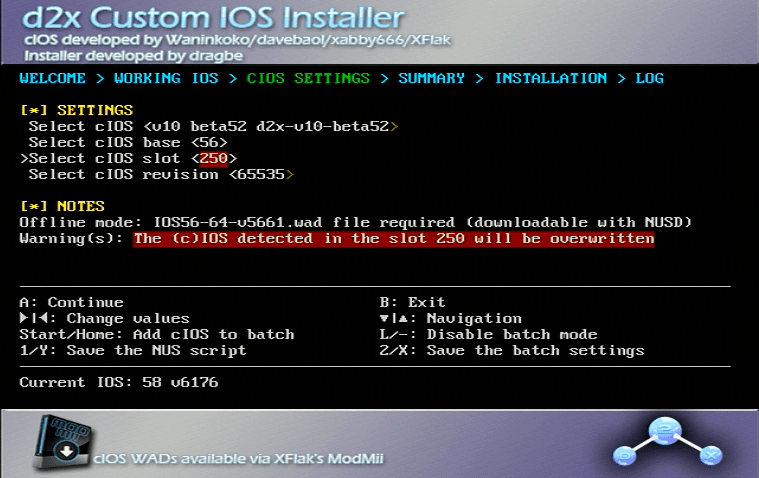

cIOS
Diese Anleitung wird dir zeigen, wie du cIOS (custom IOS) installieren kannst. Dies ist zwingend erforderlich, wenn du Spiele mit einem USB-Loader starten möchtest. Manche Homebrew-Applikationen funktionieren mit cIOS besser.

Wenn du eine Wii U (vWii) hast, dann folge dieser anleitung um cIOS stattdessen zu installieren. Wenn man es versucht ein anderes cIOS auf der vWii zu installieren, wird es nicht funktionieren.
Wenn du eine Wii mini hast, installiere dieses cIOS stattdessen. Wenn man es versucht ein anderes cIOS auf der Wii mini zu installieren, wird es nicht funktionieren.
Voraussetzungen
- Eine Wii
- Eine SD-Karte oder ein USB-Laufwerk
- d2x cIOS Installer
Vergewissere dich, dass bei Verwendung der SD-Karte der Sperrschalter in der entriegelten Position steht, da du sonst nicht die richtigen Optionen in der Installation auswählen kannst
Anleitung
Abschnitt 1 - Herunterladen
- Lade den d2x cIOS-Installer herunter und entpacke ihn in das Stammverzeichnis deiner SD-Karte oder deines USB-Laufwerks.
- Verbinde deine SD-Karte oder dein USB-Laufwerk mit deiner Wii und starte den d2x cIOS-Installer über den Homebrew-Kanal.
Abschnitt 1 - Herunterladen
- Lade herunter, extrahiere, und starte anschließend den NUS Downloader.
- Wähle “Database”, “IOS”, danach “IOS57”, und wähle “v5918”.
- Stelle sicher, dass “Pack WAD” ausgewählt und “Patch IOS” nicht ausgewählt ist.
- Wiederhole den vorherigen Schritt für IOS56 v5661 und IOS38 v4123.
- Sobald du alle drei IOS heruntergeladen hast, wird sich ein Ordner
titlesim gleichen Ordner wie der NUS Downloader befinden. Durchsuche den Ordner bis du die drei heruntergeladenen WAD-Dateien gefunden hast. Platziere alle drei WAD-Dateien in das Stammverzeichnis deiner SD-Karte oder deines USB-Laufwerks. - Lade den d2x cIOS-Installer herunter und entpacke ihn in das Stammverzeichnis deiner SD-Karte oder deines USB-Laufwerks.
- Verbinde deine SD-Karte oder dein USB-Laufwerk mit deiner Wii und starte den d2x cIOS-Installer über den Homebrew-Kanal.
Abschnitt 2 - Installieren
- Drücke auf Fortfahren, stelle dann folgende Optionen ein:
Wähle cIOS: v10 beta52 d2x-v10-beta52
Wähle cIOS base: 57
Wähle cIOS slot: 249
Wähle cIOS version: 65535

- Wenn du damit fertig bist, drücke zweimal auf A um die Installation zu starten.
- Wenn die Installation abgeschlossen ist, drücke A um zurückzugehen und stelle dann folgende Optionen ein:
Wähle cIOS: v10 beta52 d2x-v10-beta52
Wähle cIOS base: 56
Wähle cIOS slot: 250
Wähle cIOS version: 65535

- Wenn du damit fertig bist, drücke zweimal auf A um die Installation zu starten.
- Wenn die Installation abgeschlossen ist, drücke A um zurückzugehen und stelle dann folgende Optionen ein:
Wähle cIOS: v10 beta52 d2x-v10-beta52
Wähle cIOS base: 38
Wähle cIOS slot: 251
Wähle cIOS version: 65535
- Hast du alles eingestellt, drücke zweimal auf A um die Installation zu starten, und verlasse nach Abschluss das Programm.
Problembehandlung
Obwohl die meisten Spiele sofort mit den Standardeinstellungen funktionieren sollten, kann es sein, dass manche Spiele ein spezielles cIOS benötigen, um zu funktionieren oder um bestimmte Funktionen im Spiel zu nutzen.
Beispiele hierfür sind:
- Verwendung einer Tastatur in Animal Crossing: Let’s Go to the City.
- Verwendung von SpongeBob’s Boating Bash.
Eine weitaus umfassendere (wenn auch weiterhin unvollständige) Liste kannst du hier finden.
Um das cIOS für ein bestimmtes Spiel zu ändern, folge diesen Anweisungen:
- Wähle das Spiel welches nicht funktioniert.
- Klicke auf Einstellungen.
- Wähle
Game Load. - Scrolle herunter zu
Game IOS. - Gib den zu verwendenden IOS-Slot ein.
- Verwende 250 oder 251, falls 249 nicht funktioniert.
- Drücke auf ok und versuche das Spiel zu laden.
- Wähle das Spiel welches nicht funktioniert.
- Klicke auf das Zahnradsymbol.
- Gehe zu cIOS und nutze die Pfeile um den zu verwendenden IOS-Slot auszuwählen.
- Verwende 250 oder 251, falls 249 nicht funktioniert.
- Drücke auf Speichern und versuche das Spiel zu laden.
Möglichkeiten nach Abschluss
Mit dem Homebrew-Browser fortfahren
Der Homebrew-Browser ist ein guter Ort um Homebrew für deine Wii zu erhalten. Diese zu installieren ist nicht zwingend erforderlich.
Fortfahren in der Seitennavigation
Wir haben viele weitere Tutorials, welche dir gefallen könnten.
Du kannst nun Homebrew wie beispielsweise USB Loader GX oder WiiFlow verwenden.